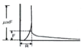
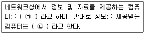

자기비파괴검사기능사 (2009-09-27 기출문제)
1과목: 자기탐상시험법
1. 비파괴검사법 중 대상 물체가 전도체인 경우에만 검사가 가능한 시험법은?
- 침투탐상시험
- 방사선투과시험
- 초음파탐상시험
- 와전류탐상시험
(정답률: 97%)

2. 형광침투탐상시험에서 수세법이 후유화법과 다른점은?
- 유화제로 형성되어 있다.
- 유화제의 적용이 필요하지 않다.
- Al합금 부품에 많이 사용할 수 있다.
- 현상하기 전에 과잉침투액 제거가 필요하지 않다.
(정답률: 73%)
3. 자분탐상시험에서 불연속의 위치가 표면에 가까울수록 나타나는 현상의 설명으로 옳은 것은?
- 자분모양이 더 명확하게 된다.
- 자분모양이 희미한 상태로 된다.
- 누설자속 자장이 더 희미하게 된다.
- 표면으로부터의 깊이와는 무관하다.
(정답률: 63%)
4. 1㎩ 을 N/m2 로 환산한 값으로 옳은 것은?
- 0.133
- 1
- 101.3
- 760
(정답률: 29%)
5. 다음 중 자분탐상 시험방법만으로 조합된 것은?
- 반사법과 공진법
- 투과법과 건식법
- 극간법과 프로드법
- 내삽법과 프로브법
(정답률: 81%)
6. 다음 중 계기압에 대한 식으로 옳은 것은?
- 계기압 = 절대압력 + 대기압력
- 계기압 = 절대압력 - 대기압력
- 계기압 = 절대압력 × 대기압력
- 계기압 = 절대압력 ÷ 대기압력
(정답률: 34%)
7. 와전류탐상시험에서 코일의 임피던스에 영향을 미치는 인자와 거리가 먼 것은?
- 전도율
- 표피효과
- 투자율
- 도체의 치수변화
(정답률: 41%)
8. 다음 비파괴검사법 중 일반적으로 결함의 깊이를 가장 정확히 측정할 수 있는 시험법은?
- 자분탐상시험
- 침투탐상시험
- 방사선투과시험
- 초음파탐상시험
(정답률: 64%)
9. 비파괴검사를 수행하는 목적과 거리가 먼 것은?
- 생산기술의 향상
- 제품의 신뢰성 증가
- 작업 공정의 자동화
- 제품의 안전성 확보
(정답률: 84%)
10. 초음파탐상시험에서 횡파의 특성에 대한 설명으로 틀린 것은?
- 종파속도의 약 ½ 이다.
- 기체와 액체에서만 진행한다.
- 사람이 들을 수 없는 높은 진동수를 가진다.
- 탐상면에 대하여 초음파의 진행방향이 수직방향으로 진행한다.
(정답률: 48%)
11. 침투탐상시험시 미립자형 현상제를 쓸 경우의 설명으로 적합하지 않은 것은?
- 현상제를 솔로 칠한다.
- 현상제를 골고루 분무한다.
- 현상제를 충분히 흔들어 사용한다.
- 현상제는 시험 후 후처리로 제거한다.
(정답률: 77%)
12. 다음 중 물질 내부의 결함을 검출하기 위한 비파괴 검사법으로만 나열된 것은?
- 와전류탐상시험, 누설시험
- 자분탐상시험, 침투탐상시험
- 침투탐상시험, 와전류탐상시험
- 초음파탐상시험, 방사선투과시험
(정답률: 87%)
13. 시험체를 절단하거나 외력을 가하여 기계설계에 이상이 있는지를 증명하는 검사 방법을 무엇이라 하는가?
- 가압시험
- 위상분석시험
- 파괴시험
- 임피던스검사
(정답률: 64%)
14. 방사선투과시험에서 투과도계는 무엇을 측정하기 위하여 사용되는가?
- 방사선의 세기
- 시험체의 결함 크기
- 시험체의 결함 종류
- 방사선 투과사진의 상질
(정답률: 60%)
15. 다음 중 자분탐상시험에서 표면 바로 밑의 결함 탐상에 가장 우수한 검출능력을 가지는 자분의 조합은?
- 습식, 형광자분
- 건식, 형광자분
- 습식, 비형광자분
- 건식, 비형광자분
(정답률: 48%)
16. 형광자분탐상시험에 자외선 조사 등을 사용하는 이유는?
- 검사자의 눈을 보호하기 위하여
- 자기의 강도를 더 높이기 위하여
- 자분지시를 더 선명하게 보기 위하여
- 자기장을 육안으로 식별이 가능하도록 하기 위하여
(정답률: 88%)
17. 20[Oe]에서 자분모양이 나타나는 A형 표준시험편을 시험체에 놓고 자화전류를 서서히 증가하여 400[A]에서 자분모양이 나타났다면 자계의 강도가 40[Oe]가 되는 전류값은 몇 A 가 되는가?
- 200
- 400
- 600
- 800
(정답률: 50%)
18. 직경 4인치, 길이 20인치인 강철봉을 선형자화법으로 검사할 때 자화전류와 검사방법으로 옳은 것은? (단, 코일의 감은 수는 5회이다.)
- 500A로서 10인치씩 나누어 감사한다.
- 1000A로서 10인치씩 나누어 검사한다.
- 500A로서 16인치와 4인치로 나누어 검사한다.
- 1000A로서 자장의 방향과 평행하게 놓고 한번에 검사한다.
(정답률: 40%)
19. 시험체에 전극을 직접 접촉시켜 통전하므로서 시험체에 자계를 형성하는 자화방법이 아닌 것은?
- 극간법
- 프로드법
- 축통전법
- 직각통전법
(정답률: 37%)
20. 제강 등의 소재 제작시 나타나는 결함인 고유 불연속이 아닌 것은?
- 파이프(pipe)
- 기공(blow hole)
- 라미네이션(lamination)
- 비금속 개재물(non metallic inclusion)
(정답률: 45%)
2과목: 자기탐상관련규격
21. 교류를 사용하여 어떤 형태의 물질에 전류를 흘렸을 때 자계의 분포 그래프가 그림과 같았다. 다음중 어떤 물질의 자계분포를 나타낸 것인가?(단, R은 물질의 반지름, F는 물질의 표면자계강도, μ는 투자율이다.)

- 봉형 비자성체
- 봉형 자성체
- 실린더형 비자성체
- 실린더형 자성체
(정답률: 67%)
22. 반파정류를 사용하여 탐상한 결과 자분모양지시가 나타났다. 이 지시가 표면 또는 표면하의 불연속인지를 확인하기 위한 조치로 가장 적합한 방법은?
- 교류로 재시험한다.
- 충격정류로 재시험한다.
- 탈자한 후 자분을 다시 적용한다.
- 적용한 전류치보다 더 높은 전류로 재시험한다
(정답률: 45%)
23. 다음 중 자분탐상시험을 적용할 수 없는 재료는?
- 철(Fe)
- 아연(Zn)
- 니켈(Ni)
- 코발트(Co)
(정답률: 69%)
24. 중앙이 빈 원통형의 시험편으로서 인공적으로 드릴 구멍을 표면에서 일정한 깊이 간격으로 가공하여 표면하의 불연속을 측정하는데 사용되는 시험편은?
- 링 시험편
- 자장 지시계
- A형 표준시험편
- C형 표준시험편
(정답률: 48%)
25. 다음 중 자분탐상시험에서 의사지시(의사모양)가 나타나는 가장 큰 원인의 조합으로 옳은 것은?
- 과도한 전류와 시험체 두께가 일정
- 능숙한 검사조작과 장비의 성능저하
- 부적절한 검사조작과 자계의 불균일한 분포
- 시험체의 자기적 안정과 검사액(자분)의 오염
(정답률: 74%)
26. 철강 재료의 자분탐상 시험방법 및 자분모양의 분류(KS D 0213)에 따라 탐상 가능한 시험면의 깊은 곳에 있는 내부의 인공 흠을 검출하기 위한 시험편과 자분적용 방법으로 가장 적합한 것은?
- B형 대비시험편, 연속법
- B형 대비시험편, 잔류법
- A형 비교시험편, 연속법
- C형 표준시험편, 잔류법
(정답률: 35%)
27. 항공우주용 자기탐상 검사방법(KS W 4041)에 따라 전기니켈도금과 같은 피복이 있을 때 그 두께가 얼마이하로 하여야 결함 검출을 수행할 수 있는가?
- 0.0⑤인치
- 0.01인치
- 0.1인치
- 0.5인치
(정답률: 27%)
28. 철강 재료의 자분탐상 시험방법 및 자분모양의 분류(KS D 0213)에 의한 탐상에서 도체 패드(Pad)의 사용 목적은?
- 자화전류의 단절
- 자분 적용의 완료
- 자장의 감소 증진
- 시험품의 소손방지
(정답률: 45%)
29. 철강 재료의 자분탐상 시험방법 및 자분모양의 분류(KS D 0213)에 따른 A형 표준시험편의 재질로 옳은 것은?
- 스테인리스 스틸판
- 전자 연철판
- SM58 철판
- 고장력 철판
(정답률: 35%)
30. 철강 재료의 자분탐상 시험방법 및 자분모양의 분류(KS D 0213)에 따른 탐상 수행 시 다음 중 사용 가능한 검사장치 또는 자재는?
- 자분의 농도가 1g/ℓ인 비형광 습식자분
- 인공흠의 나비가 57㎛인 C형 표준 시험편
- 인공흠의 깊이가 10㎛d인 A1-15/50 시험편
- 자분의 농도가 100g/ℓ인 형광 습식자분
(정답률: 32%)
31. 항공우주용 자기탐상 검사방법(KS W 4041)에서 자외선 등을 사용할 때 최대 얼마의 간격으로 조도를 측정하여야 하는가?
- 1주
- 2주
- 15일
- 30일
(정답률: 31%)
32. 철강 재료의 자분탐상 시험방법 및 자분모양의 분류(KS D 0213)에 의한 자분모양을 기록하는 방법에 해당되지 않는 것은?
- 전사
- 각인
- 스케치
- 사진촬영
(정답률: 75%)
33. 철강 재료의 자분탐상 시험방법 및 자분모양의 분류(KS D 0213)에 따른 자화방법과 분류기호 표시가 올바른 것은?
- 극간법 : M
- 프로드법 : C
- 직각통전법 : EA
- 축통전법 : ER
(정답률: 64%)
34. 철강 재료의 자분탐상 시험방법 및 자분모양의 분류(KS D 0213)에서 자외선조사등은 자외선강도를 강도계로 측정할 때 필터면에서 38㎝ 떨어진 위치에서 몇 ㎼/cm2 미만 경우 수리 또는 폐기하여야 하는가?
- 800
- 1100
- 1200
- 1500
(정답률: 69%)
35. 철강재료의 자분탐상 시험방법 및 자분모양의 분류(KS D 0213)에 따르면 탐상시험시 교류는 내부 흠의 검출성능이 매우 나쁘다. 어떤 이유 때문인가?
- 광전효과 때문
- 표피효과 때문
- 충전율 변화 때문
- 잔류자속밀도가 높기 때문
(정답률: 43%)
36. 철강재료의 자분탐상 시험방법 및 자분모양의 분류(KS D 0213)에 의한 자분모양 관찰 시“미세한 요철부에 생기는 누설자속에 의해 형성되는 자분모양과 자분이 오목부분에 채워져서 생기는 자분모양”을 나타내는 의사지시는?
- 자기펜 자국
- 단면급변 지시
- 재질 경계지시
- 표면거칠기 지시
(정답률: 27%)
37. 철강 재료의 자분탐상 시험방법 및 자분모양의 분류(KS D 0213)에 의한 용어의 정의가 잘못 설명된 것은?
- 자화전류란 시험품에 자속을 발생시키는데 사용하는 전류를 말한다.
- 자분이란 시험에 사용되는 강자성체의 미분말을 말한다.
- 분산매란 자분이 여러 검사체에 잘 분산되는 정도를 매수로 나타내는 것을 말한다.
- 검사액이란 습식법에 사용하는 자분을 분산 현탁시킨 액을 말한다.
(정답률: 22%)
38. 철강 재료의 자분탐상 시험방법 및 자분모양의 분류(KS D 0213)에 의해 지시 길이가 선형으로10㎜, 20㎜, 30㎜가 거의 일직선상에 연속하여 나타났으며 지시 10㎜와 20㎜ 사이의 간격은 1㎜이고, 20㎜ 와 30㎜ 사이의 간격이 5㎜ 였다면 최종 지시 길이의 판정으로 옳은 것은?
- 10㎜, 20㎜, 30㎜ 는 모두 연속한 지시로 판정하여 지시길이는 60㎜ 이다.
- 10㎜, 20㎜, 30㎜ 는 모두 연속한 지시로 판정하여 지시길이는 66㎜ 이다.
- 10㎜, 20㎜ 는 연속한 지시, 그리고 30㎜는 독립한 지시로 판정하여 길이은 각각 31㎜와 30㎜ 이다.
- 10㎜, 20㎜ 는 연속한 지시, 그리고 30㎜는 독립한 지시로 판정하여 길이는 각각 31㎜와 35㎜ 이다.
(정답률: 20%)
39. 항공우주용 자기탐상 검사방법(KS W 4041)에 의해 비형광 자분법을 사용할 때 조명 장치로는 백색등을 검사 영역에 설치하여야 한다. 적절한 검사를 수행하기 위하여 적어도 몇 ㏓ 이상의 백색 등이 필요한가?
- 200
- 500
- 1250
- 2150
(정답률: 68%)
40. 철강 재료의 자분탐상 시험방법 및 자분모양의 분류(KS D 0213)에 따른 자화전류치 및 통전시간을 시험기록에 작성할 때의 설명으로 옳은 것은?
- 자화전류치는 통전시간을 기재한다.
- 자화전류치는 암페아·턴으로 기재한다.
- 코일법인 경우 코일명과 타래수를 부기한다.
- 프로드법의 경우는 프로드 간격을 부기한다.
(정답률: 54%)
3과목: 금속재료일반 및 용접일반
41. 해커로부터 시스템을 방어하기 위한 효과적인 비밀 번호관리와 거리가 먼 것은?
- 주민등록번호의 앞자리나 뒷자리 등을 사용하지 않는다.
- 집 전화, 핸드폰 전화번호 등을 사용하지 않는다.
- 외우기 쉬운 문자열이나 숫자 배열을 피한다.
- 사용자 ID와 비밀번로를 같은 것으로 사용한다
(정답률: 60%)
42. 다음 중 컴퓨터의 출력 장치가 아닌 것은?
- CRT
- 플로터
- 스캐너
- LCD
(정답률: 32%)
43. 다음 ( )안에 들어갈 단어로 옳게 나열한 것은?

- ㉠-호스트, ㉡-서버
- ㉠-서버, ㉡-클라이언트
- ㉠-클라이언트, ㉡-서버
- ㉠-클라이언트, ㉡-호스트
(정답률: 60%)
44. 인터넷 익스플로러 6.0에서 현재 방문한 사이트를 추후에 다시 방문하기 위해 사용하는 기능은?
- 다시 읽기
- 즐겨 찾기
- 검색
- 파일 접속
(정답률: 60%)
45. 인터넷에서 사용되는 파일 전송 프로토콜은?
- FTP
- NIC
- HTML
- XML
(정답률: 15%)
46. 다음 중 재결정 온도가 가장 낮은 금속은?
- Al
- Cu
- Ni
- Zn
(정답률: 39%)
47. 실온까지 온도를 내려서 다른 형상으로 변형시켰다가 다시 온도를 상승시키면 어느 일정한 온도 이상에서 다시 원래의 형상으로 변화하는 합금은?
- 제진합금
- 방진합금
- 비정질합금
- 형상기억합금
(정답률: 67%)
48. 잔류 오스테나이트를 마템자이트로 변화시키는 열처리 방법은?
- 연속냉각 변태 처리
- 등온 변태 처리
- 항온 변태 처리
- 심랭 처리
(정답률: 50%)
49. 지금이 10mm인 인장시험편을 시험하여 파단 후 지름이 8mm가 되었다면 단면 수축률은 몇 % 인가?(오류 신고가 접수된 문제입니다. 반드시 정답과 해설을 확인하시기 바랍니다.)
- 20
- 36
- 64
- 80
(정답률: 23%)
50. 면심입방격자의 배위수는 몇 개 인가?
- 8
- 12
- 16
- 24
(정답률: 43%)
51. 피라노 선재, 레일 등을 제조할 때 사용되는 최경강으로 이 재료의 탄소함유량으로 옳은 것은?
- 0.13~0.20%C
- 0.30~0.40%C
- 0.50~0.70%C
- 1.50~2.0%C
(정답률: 8%)
52. 금속재료에 외부의 힘을 가하여 원하는 형태로 변형시킴과 동시에 재료의 기계적 성질을 개선하는 가공법을 무엇이라 하는가?
- 용접
- 절삭가공
- 소성가공
- 분말 야금
(정답률: 64%)
53. 다음 중 저용융점 합금의(fusible alloy)원소로 사용 되는 것이 아닌 것은?
- W
- Bi
- Sn
- In
(정답률: 50%)
54. 다음 중 체심입방격자의 표시로 옳은 것은?
- LCC
- BCC
- CPH
- FCC
(정답률: 44%)
55. 냉간가공과 열간가공을 구별하는 기준이 되는 것은?
- 변태점
- 탄성한도
- 재결정 온도
- 마무리 온도
(정답률: 73%)
56. 청동의 기계적 성질 중 경도는 구리에 주석이 몇 % 함유되었을 때 가장 높게 나타나는가?
- 10
- 20
- 30
- 50
(정답률: 48%)
57. 다음 중 내열용 알루미늄 합금이 아닌 것은?
- Y-합금
- 코비탈륨
- 로엑스(Lo-Ex)합금
- 톰백
(정답률: 37%)
58. 산소-아세틸렌가스용접에서 연강판의 두께가 4.4㎜ 일 경우 사용되는 용접봉의 굵기는?
- 2.6㎜
- 2.0㎜
- 3.2㎜
- 4.2㎜
(정답률: 30%)
59. 납땜부를 이음 부분에 납재를 고정시켜 납땜온도로 가열 융융시켜 화학약품에 담가 침투시키는 납땜법은?
- 노내 납땜(furnace brazing)
- 유도가열 납땜(induction brazing)
- 담금 납땜(dip brazing)
- 저항 납땜(resistance brazing)
(정답률: 43%)
60. 교류 아크용접기의 종류 중 연속적으로 전류를 조정할 수 있으며 누설 자속을 가감하여 전류의 크기를 조절하는 용접기는?
- 가동 코일형
- 탭 전환형
- 가동 철심형
- 가포화 리액터형
(정답률: 14%)